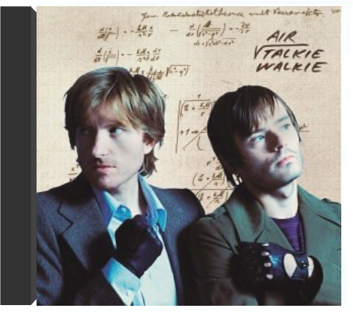

Vinyl LP pressing. In 2018, we introduced our first Mothers' Garden compilation on International Womens' Day. This compilation looked to shine a light on the often under-acknowledged musical contribution from female African artists. In 2019, we are back with Volume 2 presenting yet again some of Africa's most recognised female artists alongside some lesser known artists. Whilst the roster might have changed slightly, the quality of music is as funky as before and the message stays the same.  Avec Daft Punk et Laurent Garnier, Air est un des morceaux de choix de la "french touch", cette orgie électronique made in France. Nicolas Godin, jeune étudiant en architecture versaillais est, à l'origine, seul pour enregistrer "Modulor" pour le label tête chercheuse Mo'Wax. Le morceau ne rencontre qu'un faible succès d'estime. C'est avec l'arrivée d'un autre Versaillais, Jean-Benoit Dunckel, que tout débute vraiment. Le binôme invente un easy listening électronique libre comme l'air, pas prise de tête et pétillant comme le champagne. A tel point que l'entreprise séduit le pape de l'électro, le précurseur Jean-Jacques Perrey, inventeur de l'interplanétaire "Pop Corn". Fort de ces essais transformés, Air signe avec Moon Safari un premier album d'où émerge le tubesque "Sexy Boy". Héritière de celle d'arrangeurs comme John Barry et Burt Bacharach, leur musique est d'une rare subtilité. —Philippe Robert  Catapulté fer de lance de la french touch grâce à la pop naïve de Moon Safari, Air ratatinait sa réputation en composant pour la belle Sofia Coppola la Bof nostalgique de Virgin Suicides. Dédaignant le pré-carré électro-prog de certains de leurs camarades pris en otage par Goldorak et Albator, le duo versaillais, désormais animé d'intentions mélancoliquement sophistiquées, confirme ses dispositions mélodiques. Le Moon Safari entamé en 1998 se prolonge en un voyage psychédélique, une excursion ambient parfois interrompue par quelques bizarreries folk. S'ils ont emporté dans leurs bagages les clichés indémodables de Gainsbourg et Perrey, Nicolas Godin et Jean-Benoît Dunckel ont également invité dans leur capsule spatiale, quelques collaborateurs prestigieux tels Beck, Buffalo Daughter (amis nippons des Beastie Boys) ou Jason Faulkner. Tout ce petit monde, plongé dans une ambiance cotonneuse, relit le manuel du Pink Floyd en 11 titres et se déclare "Electronic Performers". Ainsi baptisés, Godin et Dunckel, déclinent leur manifeste en instrumental "Radian", abstraction tout en harpes et en flûtes, en pop synthétique "Lucky Unhappy", en groove funky "Radio 1" (seul titre homologué tendance "Sexy Boy") ou en hommage à Morricone "Wonder Milky Way". La tête dans les étoiles, la voix passée au vocodeur, Air construit une musique hi-tech, une space pop gonflée de détails soignés et de chœurs éthérés. —Sabrina Silamo  talkie walkieair Mûrie entre les terres dorées du Roi-Soleil et les collines juteuses de Los Angeles, la musique de Jean-Benoît Dunckel et Nicolas Godin s’épanouit loin du stress, des soucis bancaires et du mauvais goût, et cela s’entend. Depuis Moon Safari, le duo semble toujours élaborer ses mélodies délicates aux arrangements léchés dans un cocon feutré, une bulle en apesanteur. S’ils en sortent, c’est juste le temps d’un petit aller-retour à L.A, pour confier le mix final de Talkie Walkie à Nigel Godrich (éminent producteur de Beck et Radiohead) dans les mythiques studios d’Ocean Way. Résultat : un son quasi parfait, immaculé. Avec ce quatrième album, Air n’est toujours pas redescendu sur terre et c’est tant mieux. Leur ambition première n’a d’ailleurs pas changé : il s’agit toujours de "faire planer les gens sur des ondes sonores". Sauf que cette fois-ci, Nicolas Godin et JB Dunckel se délestent un peu de leur vieil attirail analogique, pour nous susurrer des mots tendres autour d’un piano à peine trafiqué. Exit aussi le vocoder. Cette fois enfin, les deux "Sexy Boys" assument pleinement leur timbre quasi féminin. Et leurs mélodies oniriques nous emportent toujours comme la caresse d’une plume… Faites tourner les éoliennes ! —Stéphanie Lopez |  Limited vinyl LP pressing. 2016 collection containing all 15 tracks recorded by Alice Clark in her short but fruitful career. Includes the northern soul classic 'You Hit Me (Right Where You Hurt Me)' and the modern soul masterpieces 'Don't You Care' and 'Never Did I Stop Loving You'. This is the first time that all of these tracks have been legally reissued on vinyl, and the first time ever on wax for 'Before Her Time'  C'est sur New Noize, le label de Papa Roach, qu'Alien Ant Farm sort son deuxième disque déjà intitulé Anthology après qu'ils eurent baptisé le premier Greatest Hits : voilà qui démontre qu'ils ont le sens de l'humour et de la suite dans les idées ! Moins énervés que leurs aînés Papa Roach, les Alien Ant Farm assènent un rock toutefois suffisamment musclé et puissamment charpenté pour enlever l'adhésion sans partage dès la première écoute, comme en témoigne le funk évocateur de "Flesh And Bone" et, surtout, car il fallait oser, la reprise canon de "Smooth Criminal" de Michael Jackson. "Wish" s'avère plus mélodique et, à lui seul, représente un condensé de cette veine qu'explore le groupe, entre fulgurances soniques et rondeurs plus calibrées pop. Sur un créneau passablement encombré, Alien Ant Farm réussit à se démarquer de ses confrères, ce qui, en soi, est déjà une manière d'exploit. —Hervé Comte |

Julien
Collection Total:
2 053 Items
2 053 Items
Last Updated:
May 23, 2024
May 23, 2024


 Made with Delicious Library
Made with Delicious Library